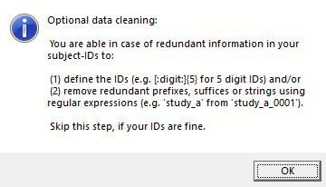
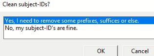
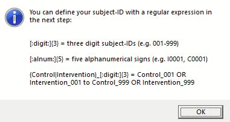
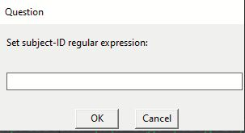
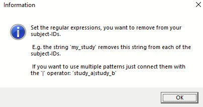
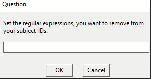
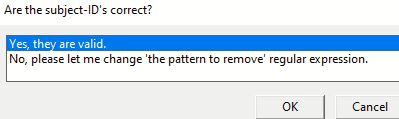
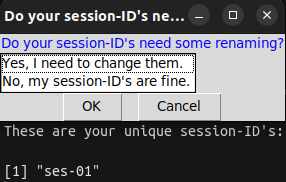
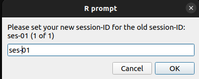

Advanced features
Note
This part is optional. You should read this if your subject-IDs are messy (have a redundant prefix, suffix, or string, for example), or if you want to rename your session-IDs.

This section covers the optional cleaning or extraction of subject-ID’s and renaming of sessions.
You are prompted to decide if you wish to edit subject- and session-ID’s during the user dialog. You can skip this step if your data was already collected with clear subject- and session-ID’s:

Option to select |
What happens? |
|---|---|
No, my subject-ID’s are fine. |
The paths are created, subject- and session-ID’s get a “sub-” and “ses-” prefix, if it isn’t already there. |
Yes |
Set a subject-ID regular expression or set a string, prefix, suffix or regular expression, which is then removed from each subject-ID. |
Resources for regular expressions
For more information on regular expressions (regex) please see the stringR cheat sheet or RegexOne.
subject-ID cleaning
The input folder name serves as the subject-ID. In the absence of a regular expression, the subject-ID is unaltered.
Regular expression: subject-ID

The subject-ID is extracted from the input string using this regular expression. If all of your files had a well established naming convention, you could use this.
subject-ID |
regular expression |
described in words |
output subject-ID |
|---|---|---|---|
01234 |
[:digit:]{5} |
5 digits |
sub-01234 |
Control2132 |
(Control|Patient)[:digit:]{4} |
“Control” OR “Patient” followed by 4 digits |
sub-Control2132 |
Patient0123_test |
(Control|Patient)[:digit:]{4} |
sub-Patient0213 |
|
abcd0123 |
[:alpha:]{4}[:digit:]{4} |
4 letters and 4 digits |
sub-abcd0123 |
pilot_sdfjd3222 |
[:alpha:]{4}[:digit:]{4} |
sub-sdfjd3222 |
|
adc932d |
[:alnum:]{5,7} |
between 5 to 7 alphanumeric (letters, digits) |
sub-adc932d |
23d49 |
[:alnum:]{5,7} |
sub-23d49 |
Examples of subject-ID regular expressions

Regular expression: pattern to remove

The pattern_to_remove regular expression simply removes the regular expression(s) from the subject-ID.
subject-ID |
regular expression |
described in words |
output subject-ID |
|---|---|---|---|
02313_bidirect |
_(bidirect|BiDirect|Bidiect) |
“_” followed by “bidirect”, “BiDirect” or “BiDiect” |
sub-02313 |
03211_BiDirect |
_(bidirect|BiDirect|Bidiect) |
sub-03211 |
|
02111_Bidiect |
_(bidirect|BiDirect|Bidiect) |
sub-02111 |
|
test0111 |
test|study_a_ |
“test” or “study_a_” |
sub-0111 |
study_a_1111 |
test|study_a_ |
sub-1111 |
|
pre9222post |
pre|post|suffix|prefix |
as in the cell above |
sub-9222 |
suffix223prefix |
pre|post|suffix|prefix |
sub-223 |
Examples of ‘patterns to remove’ regular expressions


session-ID cleaning

You can choose to keep them or rename them.
Option to select |
What happens? |
|---|---|
Yes, I need to change them |
Each session is opened separately and you can enter the new session-ID. |
No, my session-ID’s are fine. |
Nothing is edited, you keep your session-IDs |
Yes:
“Yes, I need to change them” can result in output like this. Your session-IDs can now be edited. The user could also choose to use “followup” or something else.

session-ID (old) |
session-ID (user input) |
session-BIDS |
|---|---|---|
baseline |
1 |
ses-1 |
follow_up |
2 |
ses-2 |
No:
“No, my session-ID’s are fine”
session-ID (old) |
session-BIDS |
|---|---|
baseline |
ses-baseline |
follow_up |
ses-follow_up |